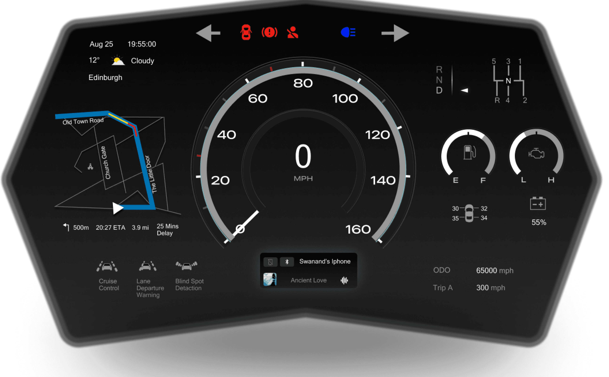
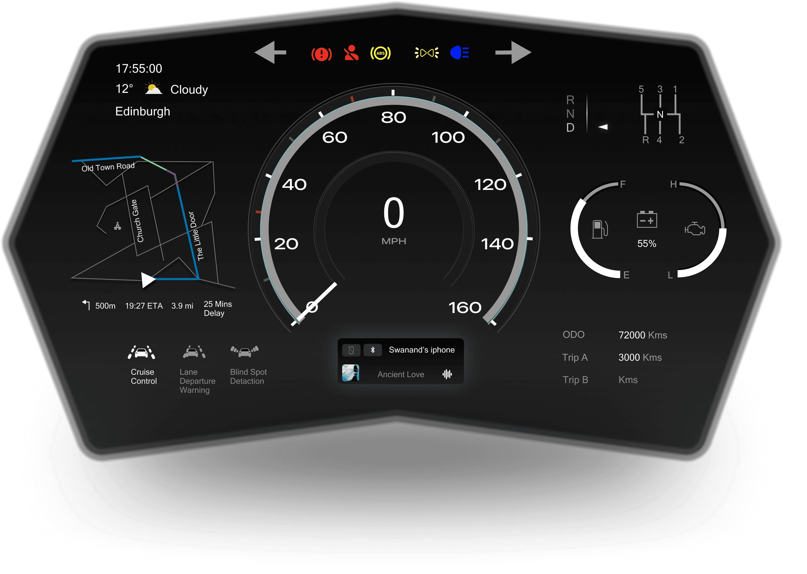

Automotive
car dashboard.
01 / The vision
Every glance
has a job to do.
More information. The same human attention.
Modern dashboards bring navigation, vehicle status and warnings into one display. I explored how a clearer hierarchy could help drivers recognise what matters in a brief glance.
My work connected research, interaction design and prototyping, then used scenario-based evaluation to challenge and refine the interface.
02 / The origins
Before the interface.
A history of attention.
I traced how the dashboard evolved, then used those observations to question what should stay familiar and what needed to change.
Before the automobile
A shield before a screen.
The historical review traces the dashboard to the protective board of a horse-drawn carriage, before it became a surface for driving information.
01 / 05Historical sources
Period groupings and hand-drawn figures follow the historical review in the project report, Figures 1–4. That review references Stephanidis and Salvendy (2024), Human-Computer Interaction in Various Application Domains, chapter 15. The final stage connects that research to the project’s own paper prototypes.
03 / The cockpit
Everything.
In its place.
A consistent structure for navigation,
driving information and vehicle status.
Explore the decisions beneath the surface.

A clear centre of gravity.
Speed takes the central position and the greatest visual weight. Supporting information stays grouped around it, preserving a recognisable structure.
04 / In motion
Different conditions.
One considered system.
Explore the original prototype recordings, with the complete dashboard always in view.
Sequence 01
A composed beginning.
The start-up sequence brings the dashboard into view, ending with the speed display at rest.
Edited to remove the parked needle sweep.
05 / The research
Thinking,
put to the test.
Real feedback. Specific scenarios.
A practical way to question
the design's assumptions.
The evaluation setup
Two screens.
One demanding context.
One screen presented driving scenarios. The other showed the dashboard prototype. Seven evaluators from engineering, design, technology and education contributed to the study.
Structured interviews and a usability questionnaire explored the prototype. A separate two-person recall task examined remembered information.
Study scope and participant groups
Twenty people contributed to preliminary surveys and interviews. Seven evaluated the prototype and completed SUS. Two completed the recall activity. Three returning evaluators reviewed the changes; these are activity counts, rather than a total of unique participants.
For recall, participants viewed the dashboard for 15 seconds, then wrote down what they remembered. Recorded completion times describe the recall task, rather than alert recognition.
The four evaluation scenarios were Highway, Navigation, Low Visibility and Multiple Alerts. The setup could not reproduce physical driving demands, environmental conditions, fatigue or long-term familiarity.
06 / The insight
Refine the detail.
Preserve the structure.
A considered evolution of the interface.
Feedback pointed to specific issues with route legibility, vehicle-status information and trip visibility. I kept the information architecture stable and refined the details within it.
Refinement without relearning.
A broader route. Reference marks for fuel and temperature. An odometer that remains available, with trip information shown when in use.
Three returning evaluators reviewed the updated design in an online session. Their feedback informed the next direction, while the core layout stayed consistent.
07 / The refinement
Every detail.
A reason to change.
Feedback became specific revisions.
Compare the design directions,
then inspect what changed.

Earlier directionRefined directionParticipant feedback identified difficulty reading the route and distinguishing traffic information.
Give the route more presence.
The navigation path was broadened while retaining its established left-hand position.
The thinking on paper
Every layout,
made tangible.
Complete sketches from the original work. Explore the information structure before the visual finish.
08 / Latest evolution
From standstill
to motion.
The latest iteration carries the same information structure into two distinct moments: preparing to leave and reading the road.
Make readiness visible.
Readiness signals
Brake and seat-belt warnings occupy the upper signal area.
Condition in context
Door and tyre-pressure labels sit beside the vehicle diagram.
A clear stationary state
Zero speed, neutral and engine-off status describe the parked vehicle.
Navigation left. Driving information centre. Vehicle status right.
Latest visual iteration09 / The original study outcome
Evidence.
With perspective.
The original prototype evaluation informed selective changes to navigation, vehicle-status information and the display of trip data. Three returning evaluators reviewed the revised direction.
Mean rounded to one decimal from the seven recorded scores.
A measure of perceived usability within this study.
What the evaluation supports
The seven SUS scores were 75, 60, 65, 62.5, 70, 80 and 87.5. Their mean is 71.4 to one decimal. The report presents 71.42. Follow-up feedback came from three returning evaluators, rather than a second seven-person SUS study.
What needs further validation
Glance behaviour, response times, workload, fatigue and long-term familiarity need more controlled evaluation. Adaptive alert placement also raises a question about predictability and learned locations.
The practical design tradeoffs
Facilitated scenarios provided an early evaluation method within the project’s time constraints. Selective changes preserved the core layout. Personalisation was proposed within that stable framework; production feasibility and standards compliance require specialist assessment.